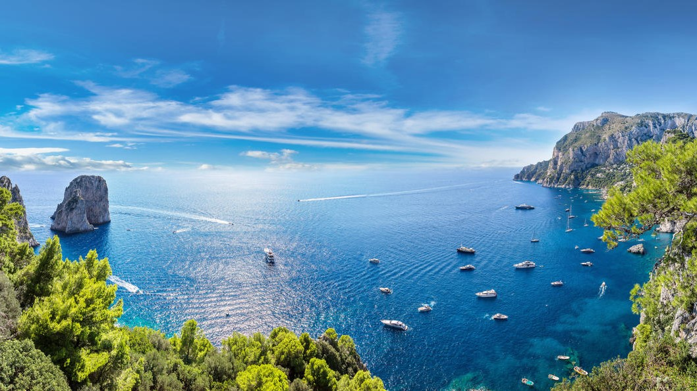
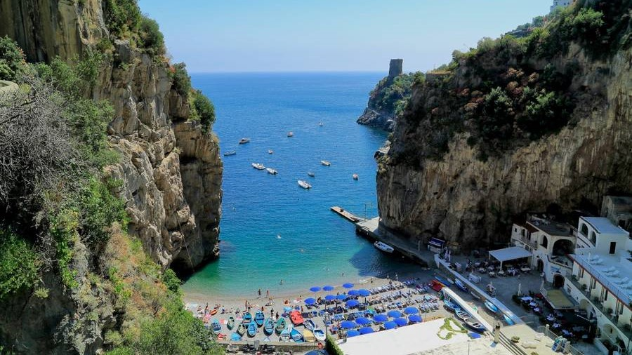
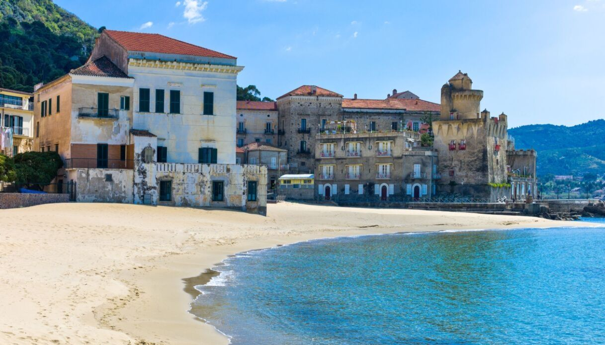
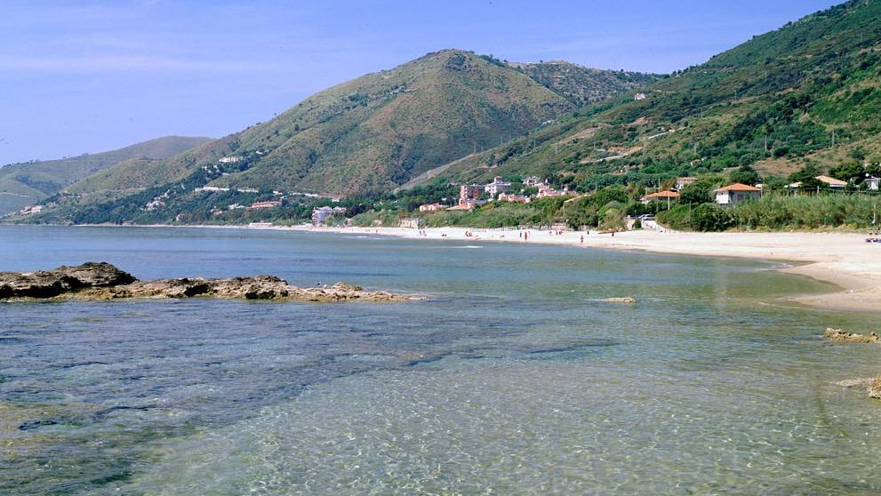
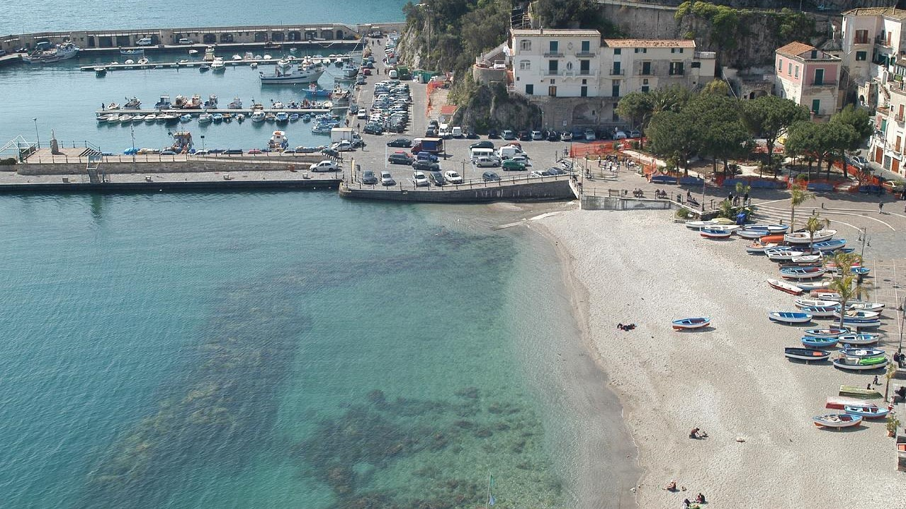
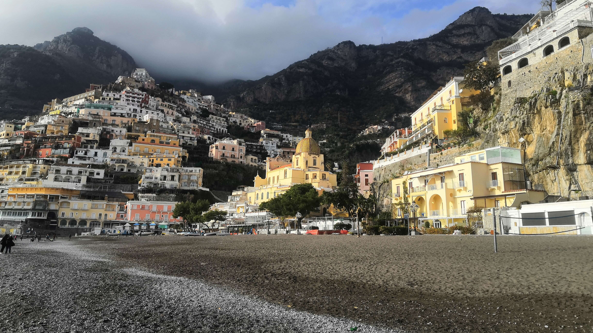
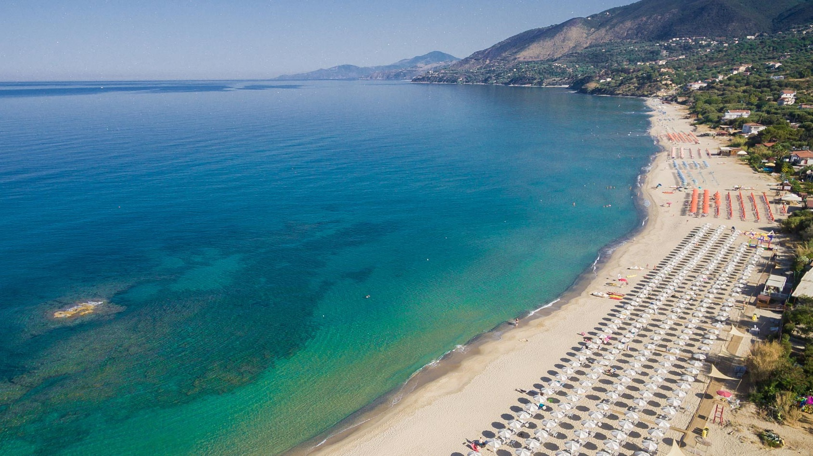

Avellino

Lancellotti Castle
Description
Lancellotti Castle is the building that symbolized Lauro, not only for its artistic value but also for its history. Subsequently occupied by the Del Balzo di Avellino, the Orsini, the counts of Nola, the Pignatelli and finally the Marquis Lancellotti.
In 1632 it was bought by the Lancellotti family, who still own the castle today. On April 30, 1799, French troops set the castle on fire. In the second half of the nineteenth century, Prince Filippo Lancellotti decided to rebuild
the damaged manor in a variety of different styles: Renaissance, Baroque and Gothic.
Read more
Italian Website

Mount Terminio
Description
The Terminio is one of the peaks of the Picentini mountains, and it constitutes a tourist destination both in summer and in winter. From his taller peak (1806 meters s.l.m.) the sight is pushed up to the Salernitan coasts. From the Terminio it is possible
to go down up to the so-called one “Bocca del Dragone”, an example of carsic phenomenon to 670 meters altitude, that constitutes one of the caves that carry, through the strata of the subsoil, the waters of the sources of Serino.

Oasis Valle della Caccia
Description
The natural oasis Valle della Caccia is an oasis of 450 hectares, located in the upper Sele valley. It was built in 1992. The totally mountainous area, delimited by the mountain peaks; Monte della Croce 1533 meters, Raia della Volpe 1631 meters, Monte
la Picciola 1520 meters, includes the hunting valley and the sources of the Acquabianca river.
Read more
Italian Website
Benevento
Benevento
Description
Benevento is a city and comune of Campania, Italy, capital of the province of Benevento. It occupies the site of the ancient Beneventum, originally Maleventum or even earlier Maloenton. The meaning of the name of the town is evidenced by its former Latin
name, translating as good or fair wind. In the imperial period, it was supposed to have been founded by Diomedes after the Trojan War.

Gole di Caccaviola
Description
The gorges of Caccaviola are located in the municipality of Cusano Mutri and formed in the gap between the Civita di Cusano and Civita di Pietraroja mountains. In the gorges of Caccaviola an "adventure path" has been created through which the gorges can
be visited with the help of expert guides using harnesses connected to steel ropes fixed in the rock.
Read more
Italian Website

Grassano Park
Description

Telese's Lake
Description
The Telese lake is a lake basin located in the municipal area of Telese Terme, in the valley of the Calore river in the province of Benevento. Formed following the earthquake of 1349, it is of karst origin and has a circular shape, a perimeter of about
1 km and a depth between 20 and 30 meters; the surface measures approximately 49,000 square meters.
Read more
Italian Website
Caserta
Limatola's Castle
Description
The Limatola Castle is located in the upper part of the historic center, on a hill, in a strategic position. It was built by the Normans on the remains of a Longobard tower. In the Renaissance, major renovations transformed it from military architecture
to a stately home, while retaining some defensive characteristics. After decades of neglect, the building was restored in 2010 and houses a hotel restaurant. The castle is surrounded by a wall interspersed with circular towers
with escarpments up to the height of the cornice.
Read more
Italian Website

Royal Palace of Caserta
Description
The Royal Palace of Caserta is a former royal residence in Caserta, southern Italy, constructed by the House of Bourbon-Two Sicilies as their main residence as kings of Naples. It is the largest palace erected in Europe during the 18th century. In 1997,
the palace was designated a UNESCO World Heritage Site; its nomination described it as "the swan song of the spectacular art of the Baroque, from which it adopted all the features needed to create the illusions of multidirectional
space". In terms of volume, the Royal Palace of Caserta is the largest royal residence in the world.
Matese Park
Description
The Matese regional park is a protected natural area. The territory of the park mainly includes the Matese mountain massif. The highest mountains, of limestone nature, are Mount Miletto (2050 m a.s.l.), Mount Gallinola (1923 m a.s.l.) and Mount Mutria
(1823 m a.s.l.). The park takes its name from the Matese lake, while another important lake is that of Gallo with the park being crossed by two rivers: the Titerno and the Tammaro.
Napoli

Mount Vesuvius
Description
Vesuvius is a somma-stratovolcano located in the Gulf of Naples, about 9 km (5.6 miles) east of Naples and a short distance from the shore. It is one of the numerous volcanoes that form the Campania volcanic arc. Vesuvius consists of a large cone partially
surrounded by the steep rim of a summit caldera caused by the collapse of a previous and originally much higher structure.


The Path of the Gods
Description
The Path of the Gods is a hiking trail that runs through the Lattari Mountains, winding between the Amalfi Coast and the Sorrento Coast, in the Campania Region. About 7.8 km long, it connects the locality of Bomerano (fraction of Agerola) with the locality
of Nocelle (fraction of Positano), crossing several villages on the coast and is considered among the most beautiful hiking trails in the world.
Read more
Italian Website
Phlegraean Fields
Description
The Phlegraean Fields is a large volcano situated to the west of Naples, Italy. It was declared a regional park in 2003. The area of the caldera consists of 24 craters and volcanic edifices; most of them lie under water. Hydrothermal activity can be observed
at Lucrino, Agnano and the town of Pozzuoli. There are also effusive gaseous manifestations in the Solfatara crater, the mythological home of the Roman god of fire, Vulcan.
Egg Castle
Description
Egg Castle is a seaside castle in Naples, located on the former island of Megaride, now a peninsula, on the Gulf of Naples in Italy. The castle's name comes from a legend about the Roman poet Virgil, who had a reputation in the Middle Ages as a great
sorcerer and predictor of the future. In the legend, Virgil put a magical egg into the foundations to support the fortifications. Had this egg been broken, the castle would have been destroyed and a series of disastrous events
for Naples would have followed. The castle is located between the districts of San Ferdinando and Chiaia, facing Mergellina across the sea.
Archeological Site of Herculaneum
Description
The Archeological site of Herculaneum is the area south of the town centre of modern Ercolano where the Roman town of Herculaneum has been excavated. Herculaneum was destroyed and buried by lava and mud during the eruption of Mt. Vesuvius in AD 79 together
with Pompeii, Stabiae and Oplontis. In 1997 the Herculaneum site was listed as a World Heritage Site by UNESCO.

Pompeii Ruins
Description
Pompeii was an ancient city located in what is now the comune of Pompei near Naples in the Campania region of Italy. Pompeii was buried under 4 to 6 m (13 to 20 ft) of volcanic ash and pumice in the eruption of Mount Vesuvius in AD 79. Largely preserved
under the ash, the excavated city offered a unique snapshot of Roman life, frozen at the moment it was buried, and an extraordinarily detailed insight into the everyday life of its inhabitants, although much of the evidence
was lost in the early excavations.
New Castle
Description
New Castle, often called Maschio Angioino (Italian: "Angevin Keep"), is a medieval castle located in front of Piazza Municipio and the city hall in central Naples, Campania, Italy. Its scenic location and imposing size makes the castle, first erected
in 1279, one of the main architectural landmarks of the city. It was a royal seat for kings of Naples, Aragon and Spain until 1815.
Underneath Naples
Description
Underneath Naples lies a series of caves and structures created by centuries of mining, and the city rests atop a major geothermal zone. There are also a number of ancient Greco-Roman reservoirs dug out from the soft tufo stone on which, and from which,
much of the city is built. Approximately one kilometre (0.62 miles) of the many kilometres of tunnels under the city can be visited from the Napoli Sotteranea, situated in the historic centre of the city in Via dei Tribunali.
This system of tunnels and cisterns underlies most of the city and lies approximately 30 metres (98 ft) below ground level. During World War II, these tunnels were used as air-raid shelters, and there are inscriptions in the
walls depicting the suffering endured by the refugees of that era.
Palace of Capodimonte
Description
The Royal Palace of Capodimonte is a grand Bourbon palazzo in Naples, Italy, formerly the summer residence and hunting lodge of the kings of the Two Sicilies, and was one of the two Royal Palaces in Napoli. It today houses the National Museum of Capodimonte
and art gallery of the city. "Capodimonte" means "top of the hill", and the palace was originally just outside the city, which has now expanded to surround it, and somewhat cooler than the city in summer.
Royal Theatre of Saint Charles
Description
The Royal Theatre of Saint Charles, as originally named by the Bourbon monarchy but today known simply as the Teatro di San Carlo, is an opera house in Naples, Italy, connected to the Royal Palace and adjacent to the Piazza del Plebiscito. It is the oldest
continuously active venue for opera in the world, having opened in 1737, decades before either Milan's La Scala or Venice's La Fenice.


Capri Island
Description
Capri is an island located in the Tyrrhenian Sea off the Sorrento Peninsula, on the south side of the Gulf of Naples. Some of the main features of the island include the Marina Piccola (the little harbour), the Belvedere of Tragara (a high panoramic promenade
lined with villas), the limestone crags called sea stacks that project above the sea (the faraglioni), the town of Anacapri, the Blue Grotto (Grotta Azzurra), the ruins of the Imperial Roman villas.

Ischia Island
Description
The volcanic outcrop of Ischia is the most developed and largest of the islands in the Bay of Naples. An early colony of Magna Graecia, first settled in the 8th century BC, Ischia today is famed for its thermal spas, manicured gardens, striking Aragonese
castle and unshowy, straightforward Italian airs – a feature also reflected in its food.

Castel of Baia
Description
The Castello di Baia beach is the ideal place for those who want to spend a real day at sea, away from the noises of everyday life, immersed in the greenery of a grove of holm oaks, surrounded by a clear sea rich in history, protected by that wonderful
monument which is the Castle of Baia.
Read more
Italian Website
Salerno

Castelcivita Caves
Description
The Grotte di Castelcivita is a complex of karst cavities particularly rich in stalactites and stalagmites of a thousand shapes, with a total of about 4800 m in length, today they represent one of the largest speleological complexes in southern Italy.
They extend, in fact, for several kilometres in the massif of the Alburni Mountains, but only 1700 m are accessible to visitors.

Gole del Calore
Description
the Gole del Calore are a series of five deep engravings carved into the rock by the running waters of the Calore Lucano river. They are located in the upper part of the Valle del Calore, in the territory of the National Park of Cilento and Vallo di Diano
and are characterized by suggestive excavations with rocky walls that drop to the peak.
Read more
Italian Website
Trentinara
Description
From here you can see the Mediterranean. Trentinara is the terrace of Cilento, the window that, from the southern spur of Campania, overlooks the sea, allowing a wonderful, truly breathtaking view. the village offers tourists an adrenaline-pumping experience,
there is also an angel flight, to be traveled in suspension at a height of 1,586 meters and at a speed varying between 60 and 120 km / h.
Read more
Italian Website

Valle delle Ferriere
Description
The Valle delle Ferriere is a place unique to this world. It can be easily reached on foot from Amalfi in about an hour. It is nice and cool even in the height of summer thanks to the waterfalls and streams running its length. The most interesting part
is without doubt the Nature Reserve, to be found at its centre.

Padula Charterhouse
Description
Padula Charterhouse, is a large Carthusian monastery, or charterhouse, located in the town of Padula, in the Cilento National Park, in Southern Italy. It is a World Heritage site. The monastery is the largest in Italy. Its building history covers 450
years, but the principal parts of the buildings are in Baroque style. It is a very large monastery, comprising 51,500 m² (12.7 acres), with 320 rooms and halls.
Paestum
Description
Paestum was a major ancient Greek city on the coast of the Tyrrhenian Sea in Magna Graecia (southern Italy). The ruins of Paestum are famous for their three ancient Greek temples in the Doric order, dating from about 550 to 450 BC, which are in a very
good state of preservation. The city walls and amphitheatre are largely intact, and the bottom of the walls of many other structures remain, as well as paved roads. The site is open to the public, and there is a modern national
museum within it, which also contains the finds from the associated Greek site of Foce del Sele.

Cala Bianca
Description
The beach owes its name to the white color of the pebbles on the beach. The beach is mostly made up, as mentioned, of small white pebbles, larger inwards, smaller and smaller, becoming almost sand as you get closer to the shore. The sea of Cala Bianca
is crystal clear and very deep and offers a wonderful view for snorkelers.
Read more
Italian Website

Fjord of Furore
Description
The fjord of Furore is one of the most evocative corners of the Amalfi Coast and consists of a sea recess inside the coast that has invaded a stretch of a deep crack with very steep walls that from the coast wedges inside creating a mixture between an
almost Dolomite landscape and the crystalline waters of the Tyrrhenian Sea.

Marina of Praia
Description

Santa Maria di Castellabate
Description
Santa Maria di Castellabate is an unspoiled seaside delight. It is the ideal destination: rugged hills cascade down to the pristine waters of the Gulf of Salerno; honey-colored beaches are bedecked with colorful umbrellas; a long shop-lined corso provides
an ideal stroll; and the piazza and waterfront offer restaurants, cafes and gelaterias.

Acciaroli
Description
Acciaroli is a small idyllic village in the province of Salerno, in southern Cilento. It is not only a beautiful area of Campania but it has also been named, as one of the places in the world where people lived the longest. It has a long, gently sloping
beach and the crystal clear water and fine sand make swimming a real pleasure.

Cetara
Description
Cetara is a cozy fishermen's village nested along the Amalfi Coast among verdant citrus groves. The road that leads along the coast from Vietri sul Mare continues the length of the shoreline, overlooked by rugged hills and rocky seashore, past the fascinating
villages of Raito and Albori, before continuing on almost straight to reach the ancient charming basin of Cetara.

Fornillo's Beach
Description
Fornillo is a small pebble stone beach in the heart of Positano paradise at the bottom of the plunging cliff face and sits on the right hand side around from Marina Grande and the main beach in Positano. Only a short 10 minute walk from Marina Grande
around the point along Via Positanesi d’Americana and further along to Via Fornillo, the walk is breathtaking.

Le Saline Beach
Description
Le Saline Beach is located close to the northern part of Palinuro. It is a beautiful beach of soft golden sand, almost 5 kilometers long, with a strong wild charm and bordered by Mediterranean scrub. The most suggestive and enjoyable stretch of this long
coastline is the one that extends around the Saracen Tower of Caprioli. The sea is very beautiful everywhere, blue, crystalline and transparent, with sandy and sloping bottoms, ideal for swimming and bathing.